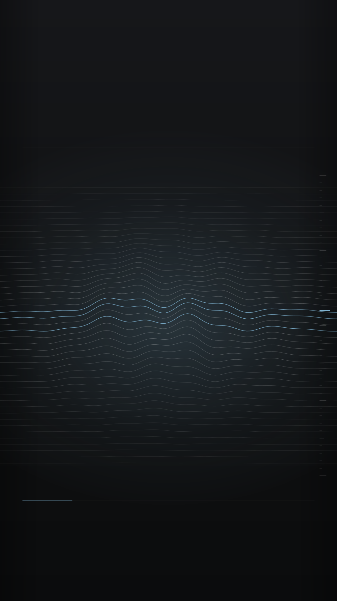
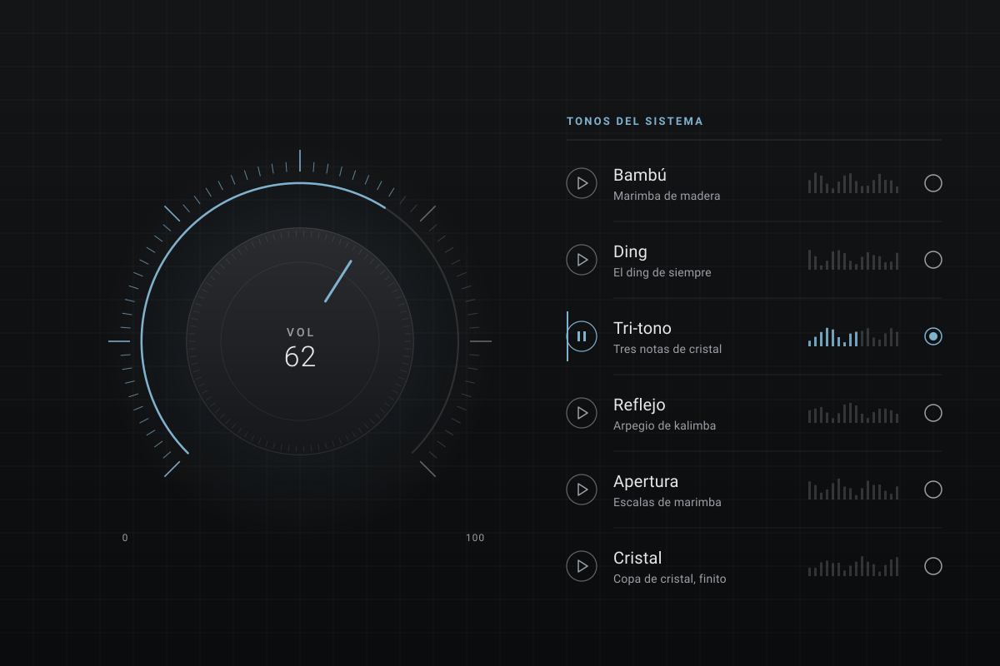
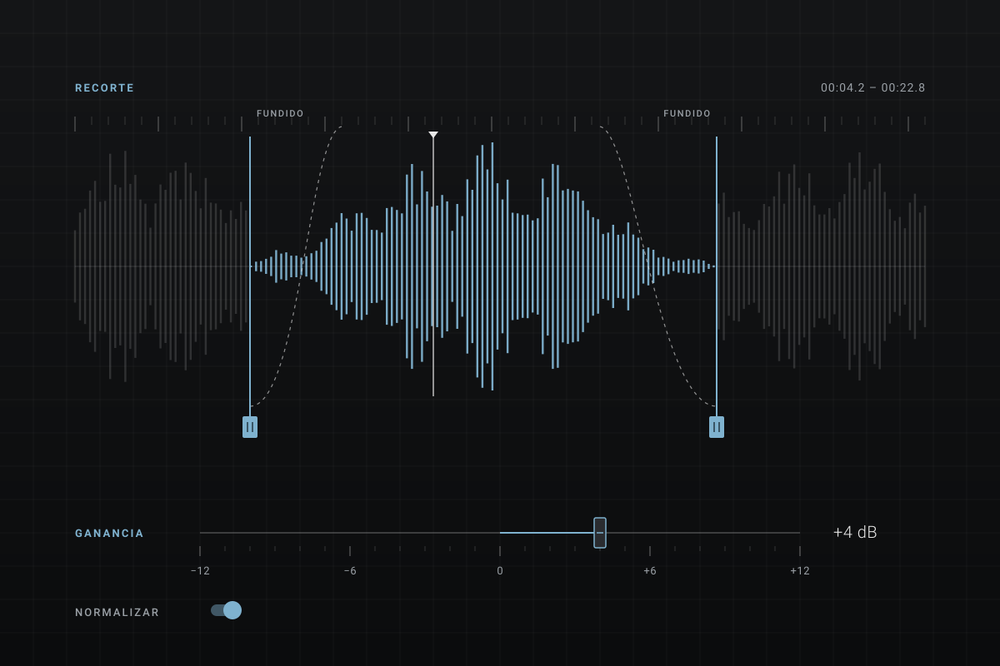
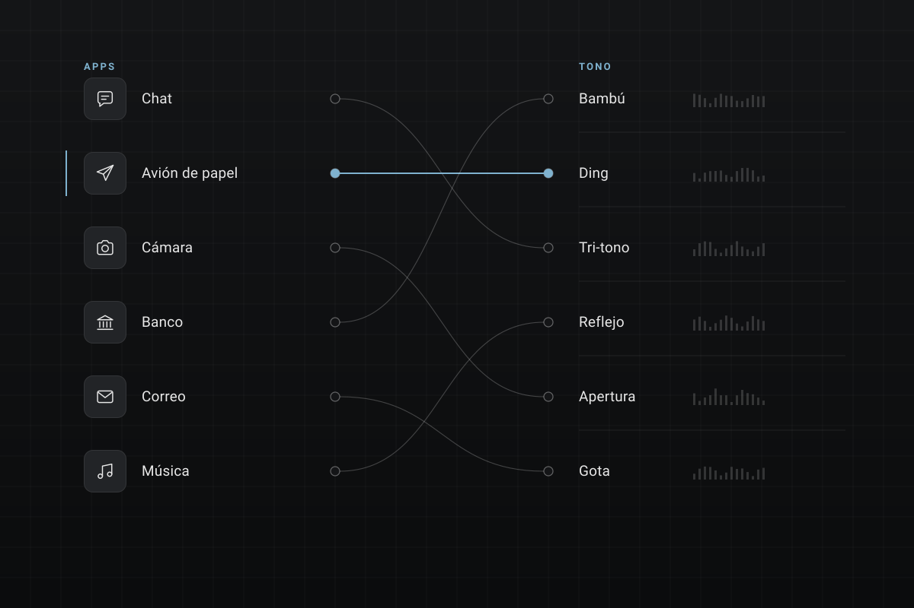
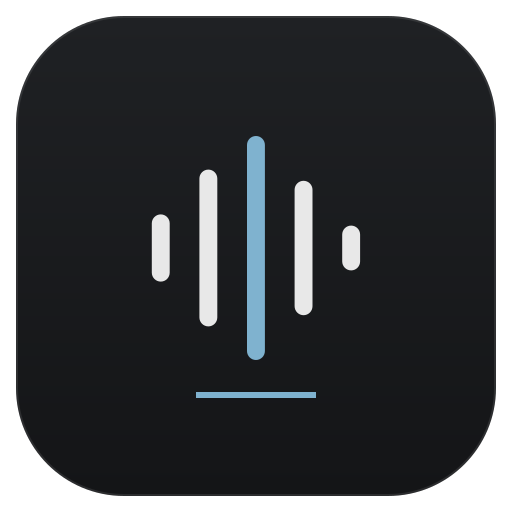

04 / 04 Estilo Sony
Sobrio, plano,
preciso.
Así se ve Zentones con la interfaz de estilo Sony: pestañas arriba con subrayado, listas a ancho completo separadas por líneas finas y un único acento azul acero. Tonos de llamada y de mensaje para todo el móvil o para cada app.
Android 10 o superior. En móviles Sony se aplica sola; se cambia en Ajustes.
- Catálogo
- 140 tonos
- Categorías
- 10
- De serie
- 18 tonos
- Ganancia
- ±12 dB
Llamadas, mensajes y alarmas
Sistema
- Tono de llamadaBambú
- NotificacionesDing
- AlarmaCumbre
Crear
- Desde YouTubeBusca una canción, baja el audio y córtalo
- Desde un audio del móvilRecorta cualquier canción o sonido que tengas
De serie · Llamada
- BambúMarimba de madera, alegre y saltarina
- ReflejoArpegio de kalimba sobre acordes suaves
- AperturaEscalas de marimba que se abren hacia arriba
140 tonos en el catálogo · Freesound · YouTube
Catálogo Zentones
- PíxelLlamada · 7.2 s · Retro 8-bit
- CartuchoMensaje · 2.2 s · Retro 8-bit
- MedianocheLlamada · 7.2 s · Terror nocturno
- Onda mediaLlamada · 7.9 s · Radio antigua
- TeletransporteMensaje · 2.3 s · Ciencia ficción
- CaféLlamada · 6.6 s · Lo-fi
Elige un tono y te guiamos para ponerlo en cada app
Ya configuradas
 ChatLlamada: Bambú · Mensaje: Ding
ChatLlamada: Bambú · Mensaje: Ding CorreoMensaje: Tri-tono
CorreoMensaje: Tri-tono
Todas las apps
 Avión de papel
Avión de papel Banco
Banco Cámara
Cámara- ChatLlamada: Bambú · Mensaje: Ding
- CorreoMensaje: Tri-tono
 Música
Música
Estilo de interfaz
- Según mi móvilSony → Sony
Apariencia
- AutomáticoSigue al sistema
- Claro
- Oscuro
Permisos
- Cambiar tonos del sistemaPara los tonos generalesActivo
- Instalar actualizacionesPara actualizar desde GitHubActivo
Actualizaciones
- Buscar actualizacionesToca para comprobar
- Buscar al abrirMira GitHub cada vez que abres la app
- Repositorioluckicla/ZenTones
01 Toca las pestañas: la app es HTML, no una captura.
01 Tonos
Todo el sistema, en una sola lista.
Tono de llamada, notificaciones y alarma, cada uno en su fila. Debajo, 18 tonos de serie sintetizados dentro de la app, tus recortes en «Mis tonos» y dos maneras de crear uno nuevo: desde YouTube o desde cualquier audio del móvil.
Sistema
- Tono de llamadaBambú
- NotificacionesDing
- AlarmaCumbre
Crear
- Desde YouTubeBusca una canción, baja el audio y córtalo
- Desde un audio del móvilRecorta cualquier canción o sonido que tengas

De serie · Llamada08
- 01BambúMarimba de madera, alegre y saltarina6.4 s
- 02ReflejoArpegio de kalimba sobre acordes suaves6.4 s
- 03AperturaEscalas de marimba que se abren hacia arriba6.0 s
- 04FaroPulsos de radar, imposible no oírlo2.4 s
- 05BrisaPad cálido con melodía de kalimba8.0 s
- 06ClásicoCampanilla de teléfono de toda la vida4.0 s
- 07CumbreMelodía brillante de kalimba en Re6.4 s
- 08PulsoBajo pulsado con marimba a contratiempo6.4 s
De serie · Mensaje10
- 01DingEl ding de siempre2.6 s
- 02Tri-tonoTres notas de cristal hacia arriba1.6 s
- 03NotaGolpe corto de marimba1.2 s
- 04CristalCopa de cristal, finito1.5 s
- 05BurbujaPop rápido y redondo1.0 s
- 06AcordeCampanas en acorde mayor3.0 s
- 07CampanillaTres campanitas que bajan2.5 s
- 08AvisoDos pitidos limpios1.0 s
- 09GotaKalimba que cae como una gota1.4 s
- 10Bambú cortoDos golpes de marimba1.3 s
02 Tienda
140 tonos, diez emisoras.
El catálogo propio se ordena en 10 categorías. Sintoniza una y escucha: en la app, cada tono se abre en el editor antes de guardarlo. Además, búsqueda en Freesound y audio de YouTube con yt-dlp.
01 / 10Retro 8-bit14 tonos
- 01PíxelLlamada · Retro 8-bit7.2 s
- 02Nivel 1Llamada · Retro 8-bit7.3 s
- 03JoystickLlamada · Retro 8-bit7.7 s
- 04CartuchoMensaje · Retro 8-bit2.2 s
- 05ArcadeMensaje · Retro 8-bit1.8 s
- 06Insert CoinMensaje · Retro 8-bit1.4 s
02 / 10Terror nocturno14 tonos
- 01MedianocheLlamada · Terror nocturno7.2 s
- 02Cámara 3Llamada · Terror nocturno7.1 s
- 03Caja de músicaLlamada · Terror nocturno7.5 s
- 04PasilloMensaje · Terror nocturno1.8 s
- 05SótanoMensaje · Terror nocturno1.6 s
- 06Turno de nocheMensaje · Terror nocturno2.6 s
03 / 10Radio antigua14 tonos
- 01Onda mediaLlamada · Radio antigua7.9 s
- 02TransistorLlamada · Radio antigua7.4 s
- 03FrecuenciaLlamada · Radio antigua7.3 s
- 04DialMensaje · Radio antigua1.9 s
- 05Emisora fantasmaMensaje · Radio antigua1.6 s
- 06SintoníaMensaje · Radio antigua1.2 s
04 / 10Ciencia ficción14 tonos
- 01ÓrbitaLlamada · Ciencia ficción6.8 s
- 02NaveLlamada · Ciencia ficción7.5 s
- 03AndroideLlamada · Ciencia ficción6.5 s
- 04HologramaMensaje · Ciencia ficción2.6 s
- 05TeletransporteMensaje · Ciencia ficción2.3 s
- 06NebulosaMensaje · Ciencia ficción1.2 s
05 / 10Lo-fi14 tonos
- 01CaféLlamada · Lo-fi6.6 s
- 02DomingoLlamada · Lo-fi6.7 s
- 03ViniloLlamada · Lo-fi7.2 s
- 04LluviaMensaje · Lo-fi2.0 s
- 05VentanaMensaje · Lo-fi1.5 s
- 06AtardecerMensaje · Lo-fi2.5 s
06 / 10Marimba y madera14 tonos
- 01CañaLlamada · Marimba y madera7.0 s
- 02CocoLlamada · Marimba y madera6.7 s
- 03LagunaLlamada · Marimba y madera7.7 s
- 04IslaMensaje · Marimba y madera1.4 s
- 05Brisa marinaMensaje · Marimba y madera1.9 s
- 06PalmeraMensaje · Marimba y madera1.4 s
07 / 10Electrónica14 tonos
- 01NeónLlamada · Electrónica6.4 s
- 02ClubLlamada · Electrónica7.2 s
- 03BasslineLlamada · Electrónica6.3 s
- 04PulsoMensaje · Electrónica1.4 s
- 05StrobeMensaje · Electrónica2.2 s
- 06SintetizadorMensaje · Electrónica1.2 s
08 / 10Zen14 tonos
- 01LotoLlamada · Zen8.7 s
- 02TemploLlamada · Zen8.1 s
- 03CuencoLlamada · Zen8.0 s
- 04Bambú zenMensaje · Zen1.9 s
- 05RespiraMensaje · Zen2.8 s
- 06JardínMensaje · Zen2.7 s
09 / 10Gaming14 tonos
- 01LogroLlamada · Gaming7.1 s
- 02Nivel arribaLlamada · Gaming7.9 s
- 03MisiónLlamada · Gaming8.1 s
- 04VictoriaMensaje · Gaming2.1 s
- 05CofreMensaje · Gaming1.9 s
- 06Power-upMensaje · Gaming1.5 s
10 / 10Alertas14 tonos
- 01UrgenteLlamada · Alertas7.0 s
- 02Sirena suaveLlamada · Alertas7.1 s
- 03PrioridadLlamada · Alertas6.5 s
- 04AtenciónMensaje · Alertas1.8 s
- 05AlarmaMensaje · Alertas1.4 s
- 06FaroMensaje · Alertas2.1 s
Seis de cada categoría, para escucharlos aquí. El resto está en la pestaña Tienda de la app.
03 Editor
Corta al décimo de segundo.
Forma de onda con tiradores, fundido de entrada y de salida, normalizar y ganancia de −12 a +12 dB. Escucha el recorte y guárdalo como llamada o como mensaje.
Editar y guardar
0:00.0 → 0:05.6 · 5.6 s
Arrastra cerca de un borde para moverlo, o toca para colocarlo.
Ajustes
- Fundido de entrada
- Fundido de salida
- Normalizar volumenLo deja al máximo sin distorsionar
Ganancia+0 dB
Usar como
- Tono de llamadaSuena en bucle
- Tono de mensajeMejor si dura menos de 3 s
- Recorte
- Tiradores en los dos bordes; atajos para usarlo entero, los primeros 30 s o los primeros 3 s.
- Fundidos
- De entrada y de salida, cada uno con su interruptor.
- Normalizar
- Lo deja al máximo sin distorsionar.
- Ganancia
- De −12 a +12 dB.
- Usar como
- Llamada, que suena en bucle, o mensaje, mejor si dura menos de 3 s.
- Abrir
- Desde la tienda, desde YouTube o con Compartir → Zentones en cualquier app de música o archivos.

04 Apps
Un tono para cada app.
Eliges la app y el tono. Zentones copia el tono a las carpetas de Tonos o Notificaciones del móvil y te guía paso a paso hasta donde se selecciona. No se queda escuchando ni suena por encima de otras apps.
A Elige el tono
Chat
Elige qué tono quieres para Chat. Zentones lo deja listo en tu móvil y te dice dónde seleccionarlo.
- Tono de llamadaBambú
- Tono de mensajeSin elegir
B Escucha y sigue
Tono de mensaje
De serie
- DingEl ding de siempre
- Tri-tonoTres notas de cristal hacia arriba
- CristalCopa de cristal, finito
- GotaKalimba que cae como una gota
C Selecciónalo
Chat
Listo, el tono ya está en tu móvil. Ahora selecciónalo en Chat:
- Toca «Abrir ajustes de notificaciones» aquí abajo
- Entra en la categoría que quieras (por ejemplo «Mensajes» o «Chats»)
- Toca «Sonido»
- Elige «Zentones · Ding» en la lista
Los nombres pueden cambiar un poco según la app y tu versión de Android.

- Apps con sus propios ajustes
- Algunas apps de mensajería eligen el tono dentro de su menú. La guía te dice dónde está y abre la app.
- El resto de apps
- Usan las categorías de notificación de Android: la guía abre los ajustes de esa app y solo tienes que tocar Sonido y elegir «Zentones · …».
05 Componentes
Las piezas, de cerca.
Esquinas de 4 px, líneas de medio punto, textos en mayúsculas espaciadas y un acento que solo aparece donde importa. Son las mismas piezas que dibuja la app.
05.1 Pestañas
05.2 Botones
05.3 Interruptor y selección
- Buscar al abrir
- Fundido de entrada
- Oscuro
05.4 Filtros
05.5 Resumen
05.6 Aviso
05.7 Barra de cristal
La barra superior y la franja inferior son de cristal con desenfoque real en Android 12 o superior.

APK Última versión
Zentones para Android.
Android 10 o superior. La app se actualiza sola desde GitHub cuando hay una versión nueva.